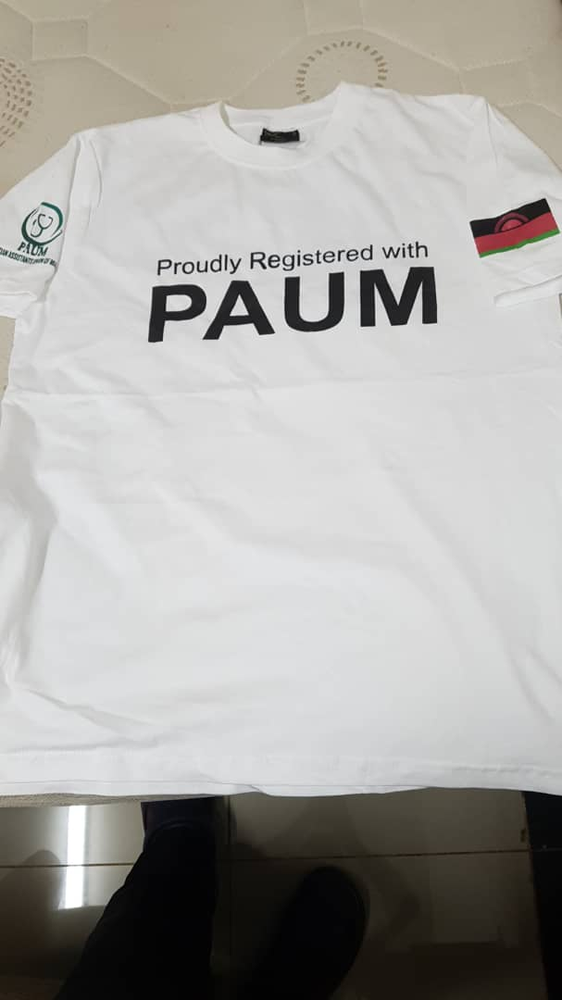

Cholera Outbreak in Malawi: A Public Health Emergency
Malawi is currently facing a public health emergency as a cholera
outbreak continues to spread throughout the country. According to the
World Health Organization (WHO), over 6,000 cases and 60 deaths have
been reported since the outbreak began in November 2020. The majority
of cases have been reported in the southern region of the country,
with the city of Blantyre being the hardest hit. The cause of the
outbreak is believed to be a combination of factors, including poor
sanitation and lack of access to clean water. Many people in the
affected areas do not have access to proper toilets or handwashing
facilities, which makes it easy for the bacteria that causes cholera
to spread. Additionally, heavy rains have caused flooding in some
areas, making it difficult for people to access clean water. The
government of Malawi, in partnership with international organizations,
is working to contain the outbreak by providing medical treatment to
those who are sick and distributing chlorine to disinfect water
sources. Health workers are also going door-to-door in affected
communities to educate people on how to prevent cholera and other
waterborne illnesses. Despite these efforts, the outbreak continues to
spread, and it is clear that more needs to be done to address the
underlying issues of poverty and lack of access to basic services that
are contributing to the spread of the disease. The government and
international community must work together to provide clean water,
sanitation, and education on hygiene to the communities in need. It's
important to note that cholera is an acute diarrheal illness caused by
infection of the intestine with the Vibrio cholerae bacteria. It's
spread mainly through contaminated water and food, and it can be
prevented through the practice of good hygiene, such as washing hands
with soap and clean water, and safe food handling. In conclusion, the
cholera outbreak in Malawi is a serious public health emergency that
requires immediate action to address the underlying issues of poverty
and lack of access to basic services. By working together, the
government, international organizations, and the community can take
steps to contain the outbreak and prevent future ones.
The PAUM board of directors calls for meeting
Health workers are also going door-to-door in affected communities to
educate people on how to prevent cholera and other waterborne
illnesses. The cause of the outbreak is believed to be a combination
of factors, including poor sanitation and lack of access to clean
water. Many people in the affected areas do not have access to proper
toilets or handwashing facilities, which makes it easy for the
bacteria that causes cholera to spread. Additionally, heavy rains have
caused flooding in some areas, making it difficult for people to
access clean water. The government of Malawi, in partnership with
international organizations, is working to contain the outbreak by
providing medical treatment to those who are sick and distributing
chlorine to disinfect water sources. Despite these efforts, the
outbreak continues to spread, and it is clear that more needs to be
done to address the underlying issues of poverty and lack of access to
basic services that are contributing to the spread of the disease. The
government and international community must work together to provide
clean water, sanitation, and education on hygiene to the communities
in need. It's important to note that cholera is an acute diarrheal
illness caused by infection of the intestine with the Vibrio cholerae
bacteria. It's spread mainly through contaminated water and food, and
it can be prevented through the practice of good hygiene, such as
washing hands with soap and clean water, and safe food handling. In
conclusion, the cholera outbreak in Malawi is a serious public health
emergency that requires immediate action to address the underlying
issues of poverty and lack of access to basic services. By working
together, the government, international organizations, and the
community can take steps to contain the outbreak and prevent future
ones.

PAUM T-Shirt Donations
The PAUM T-shirt features a bold design that showcases the
organization's commitment to health and wellness. Made from
high-quality materials, the T-shirts are both comfortable and stylish,
making them the perfect choice for anyone looking to show their
support for healthcare workers. Proceeds from the sale of the T-shirts
will go directly to support PAUM's programs and initiatives, which
range from providing continuing education and professional development
opportunities for health workers, to advocating for policies that
benefit both healthcare professionals and the communities they serve.
In addition to raising funds, the PAUM T-shirt donation program is
also aimed at raising awareness about the important role that health
workers play in our society. Healthcare professionals are the backbone
of our healthcare system, and they deserve recognition and support for
the vital work they do every day. So, if you're looking for a way to
show your support for healthcare workers and the communities they
serve, consider making a PAUM T-shirt donation today. Not only will
you be making a difference in the lives of those in need, but you'll
also be making a fashion statement that lets the world know that you
stand with health workers. To learn more about PAUM and their T-shirt
donation program, visit their website or follow them on social media.
Together, we can make a difference in the lives of healthcare
professionals and the communities they serve.
Supporting the Next Generation of Health Workers
As the demand for quality healthcare continues to grow around the
world, the role of physician assistants has become increasingly
important. Physician assistants are trained healthcare professionals
who work closely with doctors and other medical staff to provide care
to patients. They play a critical role in ensuring that communities
have access to the care they need, and they help to bridge the gap
between the demand for healthcare services and the limited supply of
doctors and nurses. In Malawi, the Physician Assistants Union (PAUM)
is working to support the next generation of health workers. Through
their sponsorship program, PAUM is providing university scholarships
to promising students who are pursuing a career in physician
assisting. PAUM's sponsorship program is designed to help remove
financial barriers that might prevent students from pursuing a career
in healthcare. With PAUM's support, students can focus on their
studies, without worrying about how they will pay for their education.
This allows them to get the training they need to become effective and
compassionate health workers, and to make a real difference in the
lives of the people they serve. In addition to providing financial
support, PAUM also offers mentorship and professional development
opportunities to its sponsored students. This helps to ensure that the
next generation of physician assistants is equipped with the skills
and knowledge they need to succeed in their careers and to provide the
highest quality of care to their patients. By sponsoring university
students, PAUM is investing in the future of healthcare in Malawi.
With their support, more students are able to pursue careers in
physician assisting, and more communities are able to access the care
they need. This is a testament to the power of partnership and the
importance of supporting the next generation of health workers. If
you're interested in supporting the Physician Assistants Union Malawi
and their sponsorship program, consider making a donation or
volunteering your time and expertise. With your help, we can build a
brighter future for healthcare in Malawi and beyond.